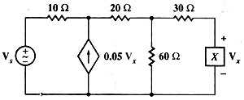

Problem #4
Consider the following circuit with Vs = 100<0° volts, f = 50 Hz , and find the phasorial voltage Vx if the X element is a) a 30 ohms resistor, b) a 0.5 henrys inductor, and c) a 50 microFarads capacitor. (Hayt-Kemmerly)
I used the following circuit descriptions:
"es,1,0,100.; r1,1,2,10; r2,2,3,20; r3,3,x,30; r6,3,0,60; jd,0,2,0.05*vx; rx,x,0,30" ->cir1
"es,1,0,100.; r1,1,2,10; r2,2,3,20; r3,3,x,30; r6,3,0,60; jd,0,2,0.05*vx; lx,x,0,0.5" ->cir2
"es,1,0,100.; r1,1,2,10; r2,2,3,20; r3,3,x,30; r6,3,0,60; jd,0,2,0.05*vx; cx,x,0,5E-005" ->cir3
Simulate the first circuit, asking for the phasorial voltage in the same step.
sq\ac(cir1,2*Pi*50):sq\absang(vx)
"28.57 < 0.°"
Erase all variables in current folder. Simulate the second circuit, asking for the phasorial voltage in the same step.
sq\ac(cir2,2*Pi*50):sq\absang(vx)
"90.24 < 25.52°"
Erase all variables in current folder. Simulate the third circuit, asking for the phasorial voltage in the same step.
sq\ac(cir3,2*Pi*50):sq\absang(vx)
"64.708 < -49.678°"